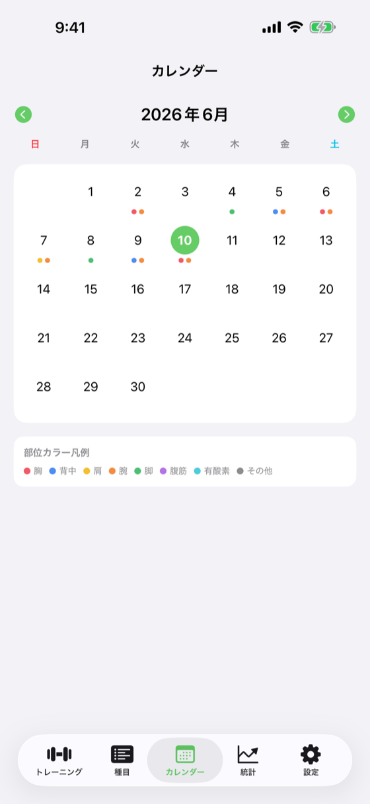

月単位のトレーニング履歴を部位ヒートマップで可視化

cd ios-apps/WorkoutDiary && fastlane specs で最新UIに自動更新月単位のカレンダーでトレーニング日を部位カラーで可視化し、過去のセッションへ素早くアクセスする閲覧専用画面。v1.1.0 では編集機能を撤廃して閲覧に特化し、部位ヒートマップ・BottomSheet 詳細・ルーティン予定ドット・凡例セクションを追加した。
| 要素 | 種類 | 説明 |
|---|---|---|
| 月ナビゲーション | HStack | 前月・次月・年月表示 |
| カレンダーグリッド | LazyVGrid | 日付グリッド。各セルに部位カラードット（最大3つ）を表示。ドットはその日にトレーニングした部位の色（ExerciseCategory.color） |
| 予定ドット（未来日） | カレンダーセル内 枠線スタイルドット | 未来日かつ実績なしの日に、曜日ルーティンから導出した予定ドット（枠線のみ、塗りなし）を表示 |
| 部位カラー凡例 | カレンダー下部 HStack | 8部位（胸・背中・肩・腕・脚・腹筋・有酸素・その他）のカラーと名称をラベル表示 |
| ストリーク表示 | Text | 「連続Nログイン」 |
| 日付タップ BottomSheet | sheet(.fraction) | 日付タップ時に表示。日付・部位タグ（カラーピル）・サマリ統計（種目数/総セット/最大重量）・種目リスト（閲覧専用）・本日のルーティンセクション（曜日ルーティンがある場合）を表示 |
| セクション | 内容 | 表示条件 |
|---|---|---|
| 日付・ヘッダー | 選択日付（yyyy年M月d日 曜日） | 常時 |
| 部位タグ | その日の部位をカラーピル（ExerciseCategory.color）で一覧 | セッションあり |
| サマリ統計 | 種目数 / 総セット数 / 最大重量 | セッションあり |
| 種目リスト | 種目名（閲覧専用）。先頭文字を部位カラーで丸装飾 | セッションあり |
| 本日のルーティン | 曜日ルーティン名と種目プレビュー | その日の曜日に割り当てられたルーティンがある場合 |
| 空表示 | 「この日の記録はありません」 | セッションなし |
| 部位 | rawValue | カラー |
|---|---|---|
| 胸 | chest | 赤（0.95, 0.35, 0.40） |
| 背中 | back | 青（0.30, 0.55, 0.95） |
| 肩 | shoulders | 黄（0.95, 0.75, 0.20） |
| 腕 | arms | オレンジ（0.95, 0.55, 0.25） |
| 脚 | legs | 緑（0.30, 0.75, 0.45） |
| 腹筋 | abs | 紫（0.70, 0.45, 0.90） |
| 有酸素 | cardio | シアン（0.30, 0.80, 0.85） |
| その他 | other | グレー（white: 0.55） |
| 状態 | 表示内容 |
|---|---|
| 通常表示 | グリッド。実績日は部位カラードット、未来の予定日は枠線ドット |
| 日付タップ（セッションあり） | BottomSheet: 部位タグ + サマリ + 種目リスト（+ ルーティンセクション） |
| 日付タップ（セッションなし） | BottomSheet: 「記録なし」（+ ルーティンセクション） |
| 操作 | 遷移先 |
|---|---|
| 日付タップ | BottomSheet を sheet 表示（同画面内、編集不可） |
| 前月・次月ボタン | 同画面内でグリッドを更新 |
// CalendarView が参照するモデル
@Model final class WorkoutSession { ... } // 実績データ取得
@Model final class WorkoutTemplate {
var assignedWeekdays: [Int] = [] // 予定ドット導出に使用
func appliesTo(date: Date) -> Bool
}
// 部位カラー（v1.1.0）
enum ExerciseCategory: String {
var color: Color { ... } // 8部位のカラー定義
}| バージョン | 日付 | 変更内容 |
|---|---|---|
| 1.0 | 2026-05-09 | 初版作成 |
| 1.1 | 2026-05-14 | v1.0.7: 日付選択後に種目リスト表示・タップでAddWorkoutViewプリセット起動、「ワークアウトを記録／編集」ボタン常設、PRセレブレーションオーバーレイ対応 |
| 1.2 | 2026-05-23 | v1.1.0: 編集機能を撤廃して閲覧専用化。日付セルに部位カラードット（最大3つ）、未来日に予定ドット（枠線）、日付タップ BottomSheet（部位タグ・サマリ・種目リスト・ルーティンセクション）、部位カラー凡例セクション追加 |